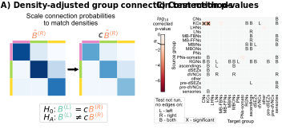
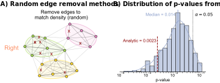

Density-adjusted group connection test
Contents
Density-adjusted group connection test#
import datetime
import time
import matplotlib as mpl
import matplotlib.pyplot as plt
import numpy as np
import pandas as pd
import seaborn as sns
from graspologic.simulations import sbm
from pkg.data import load_network_palette, load_node_palette, load_unmatched
from pkg.io import FIG_PATH, OUT_PATH
from pkg.io import glue as default_glue
from pkg.io import savefig
from pkg.perturb import remove_edges
from pkg.plot import (
SmartSVG,
draw_hypothesis_box,
heatmap_grouped,
networkplot_simple,
plot_pvalues,
set_theme,
)
from pkg.stats import compute_density, stochastic_block_test
from svgutils.compose import Figure, Panel, Text
from tqdm import tqdm
from pkg.io import get_environment_variables
from giskard.plot import merge_axes
_, RERUN_SIMS, DISPLAY_FIGS = get_environment_variables()
FILENAME = "adjusted_sbm_unmatched_test"
OUT_PATH = OUT_PATH / FILENAME
FIG_PATH = FIG_PATH / FILENAME
def glue(name, var, **kwargs):
default_glue(name, var, FILENAME, **kwargs)
def gluefig(name, fig, **kwargs):
savefig(name, foldername=FILENAME, **kwargs)
glue(name, fig, figure=True)
if not DISPLAY_FIGS:
plt.close()
t0 = time.time()
set_theme()
rng = np.random.default_rng(8888)
network_palette, NETWORK_KEY = load_network_palette()
node_palette, NODE_KEY = load_node_palette()
neutral_color = sns.color_palette("Set2")[2]
GROUP_KEY = "celltype_discrete"
left_adj, left_nodes = load_unmatched(side="left")
right_adj, right_nodes = load_unmatched(side="right")
left_labels = left_nodes[GROUP_KEY].values
right_labels = right_nodes[GROUP_KEY].values
Environment variables:
RESAVE_DATA: true
RERUN_SIMS: true
DISPLAY_FIGS: False
set_theme()
np.random.seed(888888)
ns = [5, 6, 7]
B = np.array([[0.8, 0.2, 0.05], [0.05, 0.9, 0.2], [0.05, 0.05, 0.7]])
A1, labels = sbm(ns, B, directed=True, loops=False, return_labels=True)
node_data = pd.DataFrame(index=np.arange(A1.shape[0]))
node_data["labels"] = labels + 1
palette = dict(zip(np.unique(labels) + 1, sns.color_palette("Set2")[3:]))
fig, axs = plt.subplots(
2,
2,
figsize=(6, 5),
gridspec_kw=dict(wspace=0.25, hspace=0, height_ratios=[2, 0.3]),
)
ytop = 1.05
ybottom = 0.11
xleft = 0.05
xright = 0.68
border_color = "lightgrey"
line1 = mpl.lines.Line2D(
(0.15, 0.95),
(0.4, 0.4),
transform=fig.transFigure,
color=border_color,
linewidth=1.5,
)
ax = axs[0, 0]
_, _, misc = stochastic_block_test(A1, A1, node_data["labels"], node_data["labels"])
Bhat1 = misc["probabilities1"].values
top_ax, left_ax = heatmap_grouped(Bhat1, [1, 2, 3], palette=palette, ax=ax)
top_ax.set_title(r"$\hat{B}^{(R)}$", color=network_palette["Right"], size="large")
ax.set_title(
"Scale connection probabilities\nto match densities",
fontsize="medium",
x=1.1,
y=1.3,
)
ax = axs[0, 1]
Bhat1 = misc["probabilities1"].values
top_ax, left_ax = heatmap_grouped(0.6 * Bhat1, [1, 2, 3], palette=palette, ax=ax)
top_ax.set_title(
r"$\hat{B}^{(R)}$", color=network_palette["Right"], x=0.55, size="large"
)
top_ax.text(0.94, -1.2, r"$c$", size="large")
ax.annotate(
"",
xy=(0, 1.5),
xytext=(-0.9, 1.5),
arrowprops=dict(
arrowstyle="simple",
shrinkA=5,
shrinkB=10,
facecolor="black",
),
zorder=1,
clip_on=False,
)
ax = merge_axes(fig, axs, rows=1)
ax.axis("off")
ax.set(xlim=(0, 1), ylim=(0, 2))
draw_hypothesis_box("dasbm", 0.27, 2, ax=ax, yskip=1.2, ypad=0.03)
fig.set_facecolor("w")
gluefig("adjusted_methods_explain", fig)
fig, ax = plt.subplots(1, 1, figsize=(5, 4))
node_data = networkplot_simple(A1, node_data, palette=palette, ax=ax, group=True)
n_select = 10
row_inds, col_inds = np.nonzero(A1)
np.random.seed(8888)
choice_inds = np.random.choice(len(row_inds), size=n_select)
for i in choice_inds:
source_node = row_inds[i]
target_node = col_inds[i]
x1, y1 = node_data.loc[source_node, ["x", "y"]]
x2, y2 = node_data.loc[target_node, ["x", "y"]]
x = (x1 + x2) / 2
y = (y1 + y2) / 2
ax.text(
x,
y,
"x",
va="center",
ha="center",
color="darkred",
fontsize="medium",
zorder=2,
)
ax.set_title("Remove edges to\n match density (random)", fontsize="medium")
ax.set_ylabel(
"Right",
color=network_palette["Right"],
size="large",
rotation=0,
ha="right",
labelpad=10,
)
fig.set_facecolor("white")
gluefig("edge_removal_methods", fig)
n_edges_left = np.count_nonzero(left_adj)
n_edges_right = np.count_nonzero(right_adj)
n_left = left_adj.shape[0]
n_right = right_adj.shape[0]
density_left = n_edges_left / (n_left**2)
density_right = n_edges_right / (n_right**2)
n_remove = int((density_right - density_left) * (n_right**2))
glue("n_remove", n_remove)
rows = []
n_resamples = 500
glue("n_resamples", n_resamples)
# NOTE: not running this right now as this figure is no longer in the final paper
if False:
for i in tqdm(range(n_resamples)):
subsampled_right_adj = remove_edges(
right_adj, effect_size=n_remove, random_seed=rng
)
stat, pvalue, misc = stochastic_block_test(
left_adj,
subsampled_right_adj,
labels1=left_labels,
labels2=right_labels,
)
rows.append(
{
"stat": stat,
"pvalue": pvalue,
"misc": misc,
"resample": i,
}
)
resample_results = pd.DataFrame(rows)
resample_results.to_csv(OUT_PATH / "resample_results.csv")
else:
resample_results = pd.read_csv(OUT_PATH / "resample_results.csv", index_col=0)
left_density = compute_density(left_adj)
right_density = compute_density(right_adj)
c = left_density / right_density
glue("c", c, form="0.2f")
stat, pvalue, misc = stochastic_block_test(
left_adj,
right_adj,
labels1=left_labels,
labels2=right_labels,
density_adjustment=True,
)
glue("pvalue", pvalue, form="pvalue")
set_theme(font_scale=1.25)
fig, ax = plt.subplots(1, 1, figsize=(8, 6))
sns.histplot(
data=resample_results,
x="pvalue",
ax=ax,
color=neutral_color,
kde=True,
log_scale=True,
stat="density",
)
ax.set(xlabel="p-value", ylabel="", yticks=[])
ax.spines["left"].set_visible(False)
ax.axvline(0.05, linestyle=":", color="black")
ylim = ax.get_ylim()
ax.text(0.06, ylim[1] * 0.9, r"$\alpha = 0.05$")
median_resample_pvalue = np.median(resample_results["pvalue"])
colors = sns.color_palette("Set2")
color = colors[2]
ax.axvline(median_resample_pvalue, color=color, linewidth=3)
ax.text(
median_resample_pvalue - 0.0025,
ylim[1] * 0.9,
f"Median = {median_resample_pvalue:0.2g}",
color=color,
ha="right",
)
color = "darkred"
ax.axvline(pvalue, 0, 0.58, color=color, linewidth=3, linestyle="--")
ax.text(
pvalue - 0.0002,
ylim[1] * 0.48,
f"Analytic = {pvalue:0.2g}",
ha="right",
color=color,
)
gluefig("resampled_pvalues_distribution", fig)
fig, axs = plot_pvalues(misc)
gluefig("sbm_pvalues", fig)
fig, axs = plot_pvalues(misc, annot_missing=False)
gluefig("sbm_pvalues_unlabeled", fig)
fontsize = 10
methods = SmartSVG(FIG_PATH / "adjusted_methods_explain.svg")
methods.set_width(200)
methods.move(10, 15)
methods_panel = Panel(
methods,
Text(
"A) Density-adjusted group connection test methods",
0,
10,
size=fontsize,
weight="bold",
),
)
pvalues = SmartSVG(FIG_PATH / "sbm_pvalues.svg")
pvalues.set_width(200)
pvalues.move(0, 20)
pvalues_panel = Panel(
pvalues,
Text("C) Connection p-values", 5, 10, size=fontsize, weight="bold"),
)
pvalues_panel.move(methods.width * 0.95, 0)
fig = Figure(
(methods.width + pvalues.width) * 0.88,
(pvalues.height) * 0.95,
methods_panel,
pvalues_panel,
)
fig.save(FIG_PATH / "adjusted_sbm_composite.svg")
fig

methods = SmartSVG(FIG_PATH / "edge_removal_methods.svg")
methods.set_width(200)
methods.move(5, 15)
methods_panel = Panel(
methods,
Text(
"A) Random edge removal methods",
0,
10,
size=fontsize,
weight="bold",
),
)
distribution = SmartSVG(FIG_PATH / "resampled_pvalues_distribution.svg")
distribution.set_width(200)
distribution.move(10, 15)
distribution_panel = Panel(
distribution,
Text(
"B) Distribution of p-values from subsamples",
5,
10,
size=fontsize,
weight="bold",
),
)
distribution_panel.move(methods.width * 0.9, 0)
fig = Figure(
(methods.width + distribution.width) * 0.9,
(distribution.height) * 0.9,
methods_panel,
distribution_panel,
)
fig.save(FIG_PATH / "adjusted_sbm_random_composite.svg")
fig

End#
elapsed = time.time() - t0
delta = datetime.timedelta(seconds=elapsed)
print(f"Script took {delta}")
print(f"Completed at {datetime.datetime.now()}")
Script took 0:00:12.352533
Completed at 2022-09-26 11:38:02.435626